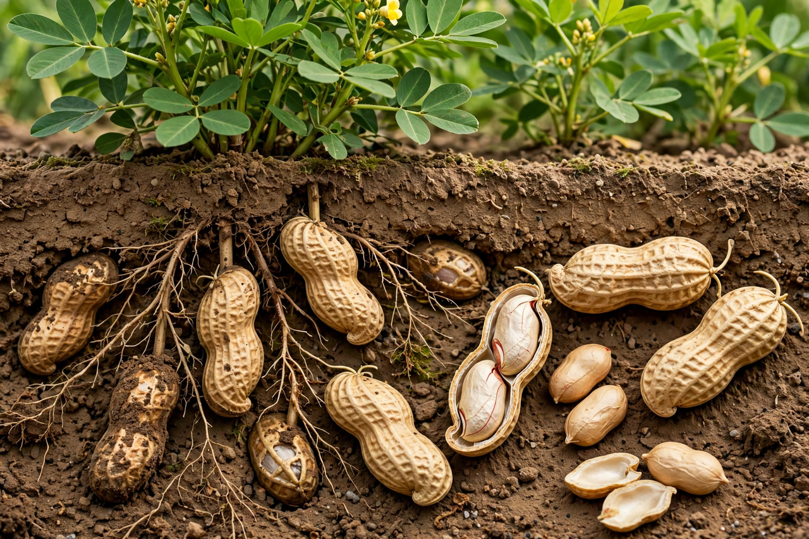

Wikipedia — the free encyclopedia

| Kingdom | Plantae |
| Family | Fabaceae |
| Genus | Arachis |
| Species | A. hypogaea |
The peanut (Arachis hypogaea), also known as the groundnut or goober, is a legume crop grown mainly for its edible seeds. Unusually, after pollination the flower stalk bends down and the developing pod matures underground — a trait called geocarpy. Peanuts originated in South America and were spread worldwide by Portuguese and Spanish traders.
China and India are the largest producers, followed by Nigeria and the United States. Peanuts are eaten roasted, boiled and as peanut butter and peanut oil, and are important in West African, Chinese and Southeast Asian cooking. George Washington Carver famously promoted hundreds of uses for the peanut in the American South, though he did not invent peanut butter.
Peanut allergy is one of the most common and severe food allergies. Early-introduction feeding guidelines, based on trials such as LEAP (2015), have changed medical advice in many countries.